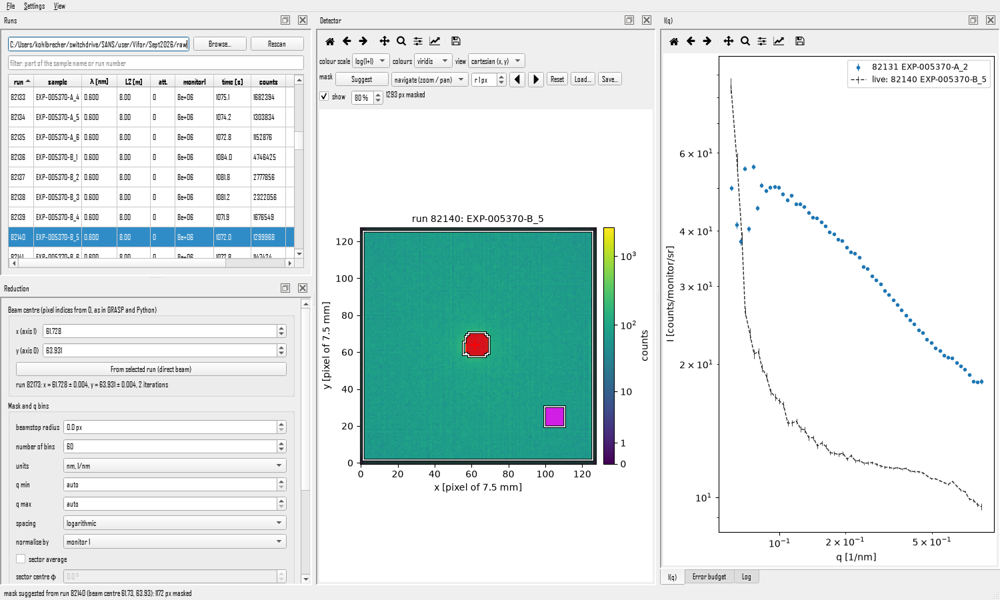

pySASred: SANS data reduction
pysasfit.sasred reduces the raw data of the SINQ SANS instruments (SANS-I now, SANS-LLB later) from the HDF
files to I(q). Every step propagates the uncertainty of every independent source exactly to first order: the
counting statistics of each pixel, the monitor counts, and (once known) the dead time, attenuator transmissions
and other calibration constants. The result carries its statistical standard deviation (Idev), the full
statistical covariance between the q points, the systematic scale uncertainties as separate sensitivities, and
a variance budget per source.
The GUI is pysasfit-sasred, or the pySASred tab of pysasfit-gui (the first tab).

Run table and Reduction panel on the left, the detector image of the selected run with its mask in the middle, I(q) on the right: a reduced run (points) and the live radial average of the selected run (dashed).
Status
Version 0.1.0.dev0, phase 1 of the package definition: one run is reduced to a monitor-normalised intensity per steradian, I(q) in counts / monitor / sr.
implemented |
still to come (phase 3 of the definition) |
|---|---|
reading SANS-I and SANS-LLB HDF files (units from the attributes, strict required fields, SHA-256 of the raw file; SANS-LLB central detector + wide-angle panels); runs without data (time 0, 0 counts, monitor 0) skipped and marked; multi-frame runs summed, selector speed scans recognised; dλ/λ from the selector tilt (SANS-I calibration table); monitors before / after the selector from their ratio to the proton beam |
SANS-LLB panel offsets from a standard (AgBe) |
counting error, dead time (non-paralysable, global or per tube), attenuator, monitor or time normalisation |
|
reduction of the table rows in 2D (transmission, Cd, sample background with (1 − p_cS), water and empty cell with g(λ), thickness, absolute scale from water or from the direct beam + efficiency map), then the radial average; optional corrections (Cd, backgrounds) left out or switched off; missing inputs of every geometry checked without reducing (also resolution, beam centre, efficiency map, selector tilts), coloured in the table and listed in the panel Missing input |
water anisotropy K(2θ) in the reduction; 2D output files; direct-beam scale for the SANS-LLB panels |
geometry with detector tilt, exact solid angle |
|
detector efficiency from water (empty cell, transmissions, solid angle; masked pixels from the x and y wires), transmission tables, dated archive of the maps in one HDF5 file with comparison over time; in the GUI: made from the water of any geometry, shown as a 2D map, saved / archived; raw image ÷ efficiency / ÷ solid angle |
archive browser in the GUI |
beam centre from the direct beam |
grouping and equivalence check in the GUI file selection, batch scripts |
scattering strength after Strunz et al. (2000): transmission over growing apertures (T_Si, τ_UL, lower limit of p_cS), p_cS from the curve, regime and advice, self-consistent p_cS |
guided strong-scatterer step in the GUI; general formula with T_EB, (1 − p_cS), K0 |
BerSANS-like grouping of runs by metadata with precisions; equivalence check of repeated runs (outliers, scale and shape drift, e.g. sedimentation) before summing; reduction plan with roles, summed runs, outliers and missing runs per configuration |
Runs panel in the GUI |
standard, suggested and drawn masks |
pixel splitting in the averaging |
radial and sector average; resolution from the direct beam of each geometry (2D Gaussian fit → divergence) + wavelength + bin width, Qdev in 1D and a 2D Gaussian per pixel; without a direct beam the divergence comes from the collimation model, calibrated on the direct beams of the same collimation at other distances (apertures and default dλ/λ in the preferences), with a warning; I and q error bars in the plots, each switchable |
– |
NXcanSAS and ASCII output with the full uncertainty information |
live reduction during the measurement |
SANSPOL correction without spin analysis (polariser in/out, flipper on/off): I+, I−, (I+ + I−)/2, I− − I+ from two or three states, exact or BerSANS flipper form, depolarisation, P and f from the metadata or the SANS-I defaults (Aswal et al. 2008) (Polarised data without spin analysis (SANSPOL)) |
polarisation keys of the SANS-I files; polarisation box in the GUI; analyser (POLARIS) |
Values whose uncertainty is not yet known (the dead time τ, the attenuator factors) are used but not propagated; every output says so in its notes (“uncertainty unknown, not propagated”).
The API reference is pySASred: API reference (also listed under API reference).